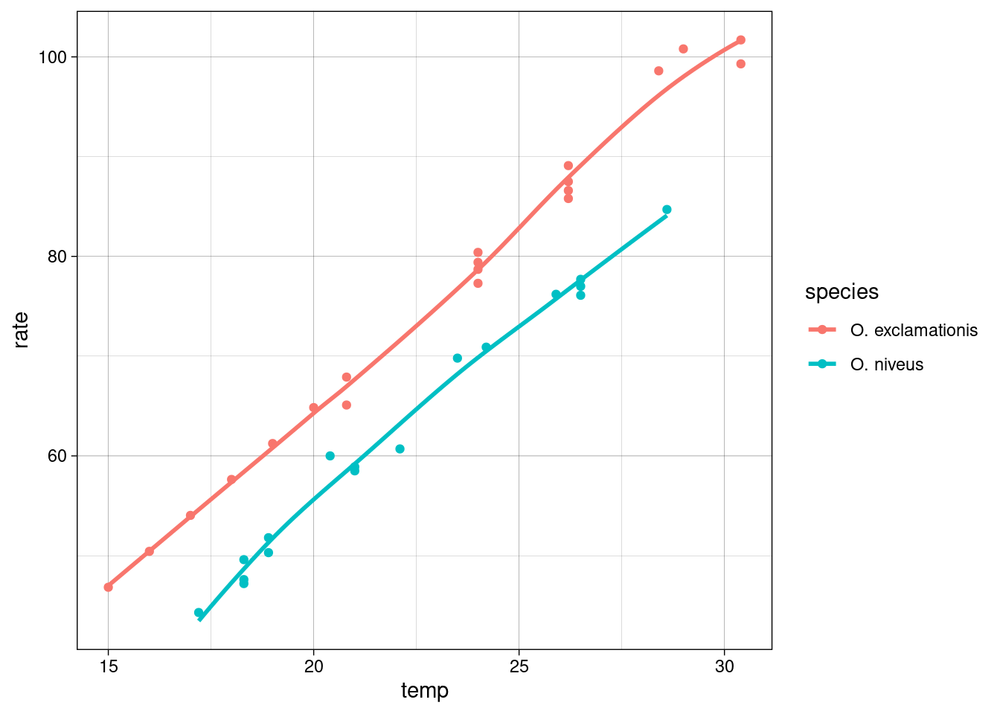
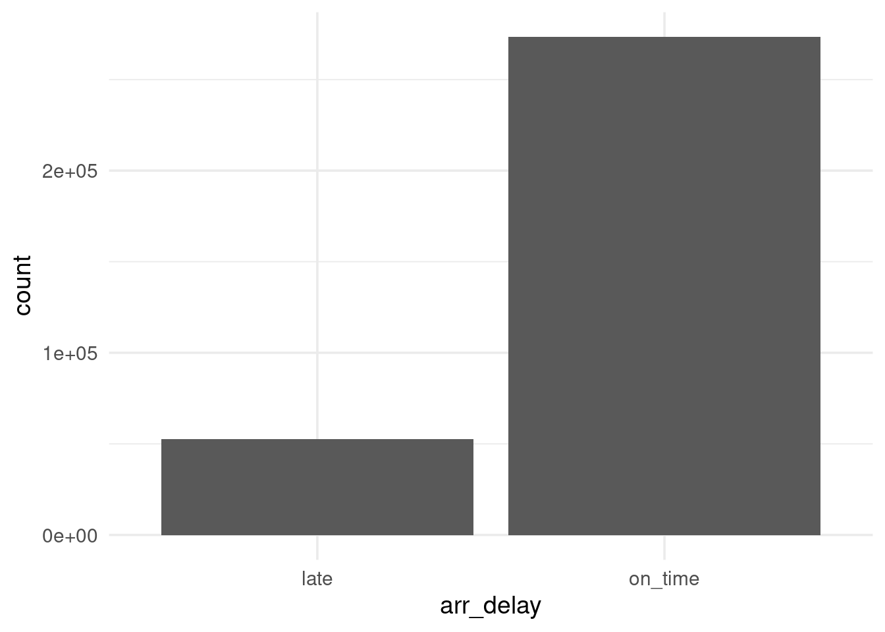
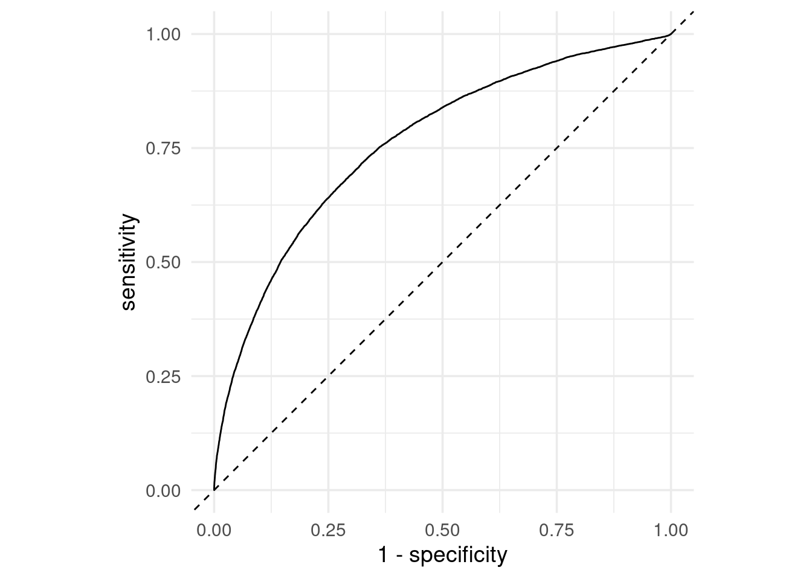
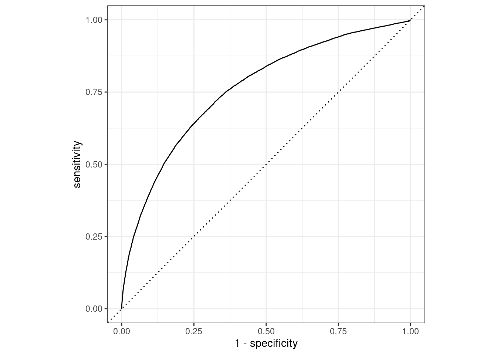

9.2 A little Recap of previous chapters
A useful model would include:
- parameter estimation
- model selection and tuning
- performance assessment
9.2.1 Case Study 1
The construction of a model implies:
check for correlation; to see if predictors influence each other, and in what way. For example, the predictors correlation can influence the estimation of the outcome, this can be identified when the estimated values change sign of have very different values, if a modification in association takes place.
Here we use the crickets data from modeldata package:
data(crickets, package = "modeldata")
crickets %>% head## # A tibble: 6 × 3
## species temp rate
## <fct> <dbl> <dbl>
## 1 O. exclamationis 20.8 67.9
## 2 O. exclamationis 20.8 65.1
## 3 O. exclamationis 24 77.3
## 4 O. exclamationis 24 78.7
## 5 O. exclamationis 24 79.4
## 6 O. exclamationis 24 80.4In this case we check for the correlation between the response and the predictor:
cor(crickets$rate,crickets$temp)## [1] 0.9591189While if we look at the correlation between predictors, which in this case one of the predictor is categorical, we need to make a transformation of the categorical predictor in order to be able to calculate the correlation.
crickets%>%count(species)## # A tibble: 2 × 2
## species n
## <fct> <int>
## 1 O. exclamationis 14
## 2 O. niveus 17crickets1 <- crickets%>%
mutate(species=ifelse(species=="O. exclamationis",1,0))
crickets1 %>%
head## # A tibble: 6 × 3
## species temp rate
## <dbl> <dbl> <dbl>
## 1 1 20.8 67.9
## 2 1 20.8 65.1
## 3 1 24 77.3
## 4 1 24 78.7
## 5 1 24 79.4
## 6 1 24 80.4cor(crickets1$species,crickets1$temp)## [1] 0.4807908construction of the model; sample data are used to make a simple linear model with the functionlm(), and a comparison of the two models is done withanova()function.
A little EDA, exploratory data analysis is done to identfy the relationship between response and predictors.
crickets %>%
ggplot(aes(temp,rate,color=species))+
geom_point()+
geom_smooth(se=F)+
theme_linedraw()
interaction_fit <- lm(rate ~ (temp + species)^2, data = crickets)
main_effect_fit <- lm(rate ~ temp + species, data = crickets)
# Compare the two: standard two-way analysis of variance
anova(main_effect_fit, interaction_fit)## Analysis of Variance Table
##
## Model 1: rate ~ temp + species
## Model 2: rate ~ (temp + species)^2
## Res.Df RSS Df Sum of Sq F Pr(>F)
## 1 28 89.350
## 2 27 85.074 1 4.2758 1.357 0.2542estimation of the model; obtained using thepredict()function; it conducts specific calculations after the fitted model is created, in this case we test it against new data.
new_values <- data.frame(species = "O. exclamationis",
temp = 15:20)
pred <- predict(main_effect_fit, new_values)
prediction_values <- bind_cols(new_values,rate=pred)
bind_rows(crickets,prediction_values)%>%
ggplot(aes(temp,rate,color=species))+
geom_point()+
geom_smooth(se=F)+
theme_linedraw()
9.2.2 Tidymodels: modeling as a step by step mode
The strategy of Tidymodels is to decide for a model to use on a step-by-step mode, this is the main difference than just using lm() or glm() functions and then predict().
When valuing a model, the fundamental is to have a clear view of the data and the type of manipulation to obtain the answer to our questions
The first step is to evaluate the structure of the data, it needs to be balanced for deciding a smart strategy for allocating data.
Smart Strategy for allocating data:
- allocate specific subsets of data for different tasks
- allocate the largest possible amount to the model parameter estimation only
The second is to split the data into two main parts as train and test sets, sometimes a third set is valued such as the validation set.
Splitting data:
training set (the substrate to develop the model and estimate the parameters)
validation set (a small set of data to measure performance as the network was trained)
test set (the final (unbiased) arbiter to determine the efficacy of the model)
data(ames, package = "modeldata")
set.seed(123)
ames_split <- initial_split(ames, prop = 0.80)
ames_train <- training(ames_split)
ames_test <- testing(ames_split)The step-by-step model decomposes the modeling procedure into a certain number of customized steps.
Preprocessing model functions:
- recipe()
- prep()
- bake()
Recipe objects for feature engineering and data preprocessing prior to modeling.
Transformations and encoding of the data with recipes::recipe() help choosing the option which is the most associated with the outcome, through data preprocessing techniques applying it for different models.
recipe() defines the formula and allows for the preprocessing steps of a model with the help of the step_** functions
Figure 9.1: Graph of the modeling steps
The matrix data transformation is obtained from a data frame through the modeling procedure of preprocessing data to obtain a new designed matrix.

Modeling steps
9.2.3 Workflow: to combine models and recipes
Once the preprocessing steps are done, data are allocated to test and training sets, and the model engine is set, the next step involves wrapping everything up into a workflow to have all the steps together.
9.2.4 Case Study 2
NYC flights data modeling
Let’s see this in practice with an example taken from: https://www.tidymodels.org/start/recipes/
Data are from {nycflights13} package:
library(nycflights13)
# tidy data and manipulation
set.seed(123)
flight_data <-
flights %>%
# data modification
mutate(arr_delay = ifelse(arr_delay >= 30, "late", "on_time"),
arr_delay = factor(arr_delay),
date = as.Date(time_hour)) %>%
inner_join(weather, by = c("origin", "time_hour")) %>%
select(dep_time, flight, origin, dest, air_time, distance,
carrier, date, arr_delay, time_hour) %>%
na.omit() %>%
mutate_if(is.character, as.factor)
flight_data %>% head## # A tibble: 6 × 10
## dep_time flight origin dest air_time distance carrier date arr_delay
## <int> <int> <fct> <fct> <dbl> <dbl> <fct> <date> <fct>
## 1 517 1545 EWR IAH 227 1400 UA 2013-01-01 on_time
## 2 533 1714 LGA IAH 227 1416 UA 2013-01-01 on_time
## 3 542 1141 JFK MIA 160 1089 AA 2013-01-01 late
## 4 544 725 JFK BQN 183 1576 B6 2013-01-01 on_time
## 5 554 461 LGA ATL 116 762 DL 2013-01-01 on_time
## 6 554 1696 EWR ORD 150 719 UA 2013-01-01 on_time
## # ℹ 1 more variable: time_hour <dttm>flight_data%>%
ggplot(aes(arr_delay))+
geom_bar()
Spending our data:
## split
set.seed(555)
data_split <- initial_split(flight_data, prop = 3/4)
train_data <- training(data_split)
test_data <- testing(data_split)Apply the recipe:
flights_rec <-
recipe(arr_delay ~ ., data = train_data) %>%
update_role(flight, time_hour, new_role = "ID") %>%
step_date(date, features = c("dow", "month")) %>%
step_holiday(date, holidays = timeDate::listHolidays("US")) %>%
step_rm(date) %>%
step_dummy(all_nominal(), -all_outcomes()) %>%
# remove columns from the data when the training
# set data have a single value
step_zv(all_predictors())
flights_rec %>%
prep() %>%
bake(new_data = NULL) %>%
head## # A tibble: 6 × 161
## dep_time flight air_time distance time_hour arr_delay
## <int> <int> <dbl> <dbl> <dttm> <fct>
## 1 656 2116 39 184 2013-02-20 07:00:00 on_time
## 2 2030 1465 339 2586 2013-07-25 19:00:00 late
## 3 1712 3448 92 589 2013-08-06 17:00:00 on_time
## 4 853 4087 96 645 2013-09-22 08:00:00 on_time
## 5 1709 652 39 200 2013-09-28 17:00:00 on_time
## 6 2257 608 46 273 2013-01-22 22:00:00 on_time
## # ℹ 155 more variables: date_USChristmasDay <int>, date_USColumbusDay <int>,
## # date_USCPulaskisBirthday <int>, date_USDecorationMemorialDay <int>,
## # date_USElectionDay <int>, date_USGoodFriday <int>,
## # date_USInaugurationDay <int>, date_USIndependenceDay <int>,
## # date_USJuneteenthNationalIndependenceDay <int>, date_USLaborDay <int>,
## # date_USLincolnsBirthday <int>, date_USMemorialDay <int>,
## # date_USMLKingsBirthday <int>, date_USNewYearsDay <int>, …Fit a model with a recipe and apply the workflow:
- process the recipe using the training set
- apply the recipe to the training set
- apply the recipe to the test set
lr_mod <-
logistic_reg() %>%
set_engine("glm")Workflow: to simplify the process a parsnip object pairs a model and recipe together
flights_wflow <-
workflow() %>%
add_model(lr_mod) %>%
add_recipe(flights_rec)
flights_wflow## ══ Workflow ════════════════════════════════════════════════════════════════════
## Preprocessor: Recipe
## Model: logistic_reg()
##
## ── Preprocessor ────────────────────────────────────────────────────────────────
## 5 Recipe Steps
##
## • step_date()
## • step_holiday()
## • step_rm()
## • step_dummy()
## • step_zv()
##
## ── Model ───────────────────────────────────────────────────────────────────────
## Logistic Regression Model Specification (classification)
##
## Computational engine: glmFit: The function to prepare the recipe and train the model from the resulting predictors
# this takes a bit
flights_fit <-
flights_wflow %>%
# prepare the recipe and train the model
fit(data = train_data)Extract the model or recipe objects from the workflow:
flights_fit %>%
# pull_workflow_fit() %>%
tidy() %>%
head## # A tibble: 6 × 5
## term estimate std.error statistic p.value
## <chr> <dbl> <dbl> <dbl> <dbl>
## 1 (Intercept) 5.26 2.72 1.93 5.36e- 2
## 2 dep_time -0.00167 0.0000141 -118. 0
## 3 air_time -0.0438 0.000561 -78.1 0
## 4 distance 0.00615 0.00150 4.10 4.12e- 5
## 5 date_USChristmasDay 1.14 0.171 6.70 2.12e-11
## 6 date_USColumbusDay 0.626 0.169 3.71 2.10e- 4Use a trained workflow to predict following these steps:
- build the model (lr_mod),
- create a preprocessing recipe (flights_rec),
- bundle the model and recipe (flights_wflow), and
- train the workflow using a single call to fit()
Figure 9.2: Graph of the workflow steps
Then use the trained workflow to predict using the test data or any other new data:
flights_pred <-
predict(flights_fit, test_data, type = "prob") %>%
bind_cols(test_data %>%
select(arr_delay, time_hour, flight))
flights_pred %>%head## # A tibble: 6 × 5
## .pred_late .pred_on_time arr_delay time_hour flight
## <dbl> <dbl> <fct> <dttm> <int>
## 1 0.0183 0.982 on_time 2013-01-01 06:00:00 461
## 2 0.0426 0.957 on_time 2013-01-01 06:00:00 5708
## 3 0.0413 0.959 on_time 2013-01-01 06:00:00 71
## 4 0.0253 0.975 on_time 2013-01-01 06:00:00 194
## 5 0.0306 0.969 on_time 2013-01-01 06:00:00 1743
## 6 0.0236 0.976 on_time 2013-01-01 06:00:00 1077Figure 9.3: Graph of the workflow to predict
How will we evaluate the performance of our workflow?
To finally answer our question we need to check the area under the ROC curve.
What is a ROC curve?
It is a curve that identifies the area of credibility of our model. To calculate the curve we use two functions: roc_curve() and roc_auc(), the curve and the area under the curve, respectively.
The ROC curve uses the class probability estimates to give us a sense of performance across the entire set of potential probability cutoffs.
Once the predicted class of probabilities are obtained we can generate a ROC curve. Let’s see it applied in our NYC flights case study. We need late and on_time variable predictors to create the curve and apply the autoplot() method as shown below:
flights_pred %>%
roc_curve(truth = arr_delay, .pred_late)%>%
ggplot(aes(x=1-specificity,y=sensitivity))+
geom_abline(linetype="dashed")+
geom_line()+
coord_equal()
flights_pred %>%
roc_curve(truth = arr_delay, .pred_late) %>%
autoplot()
flights_pred %>%
roc_auc(truth = arr_delay, .pred_late)## # A tibble: 1 × 3
## .metric .estimator .estimate
## <chr> <chr> <dbl>
## 1 roc_auc binary 0.761In particular, below are shown the steps for different cases, and the visualization used to evaluate the credibility of a model.